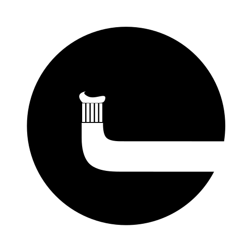
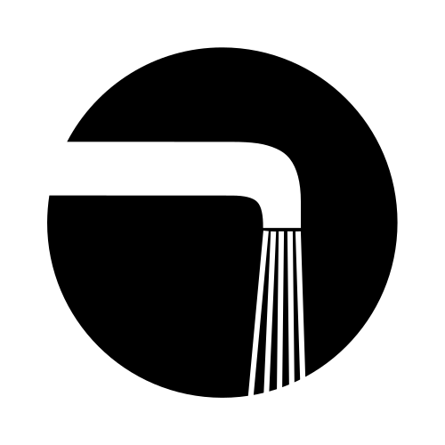
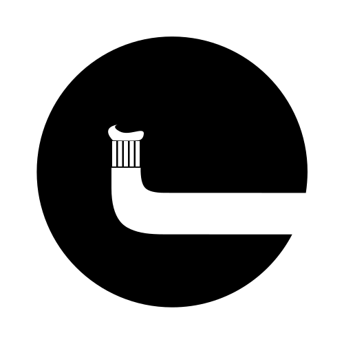
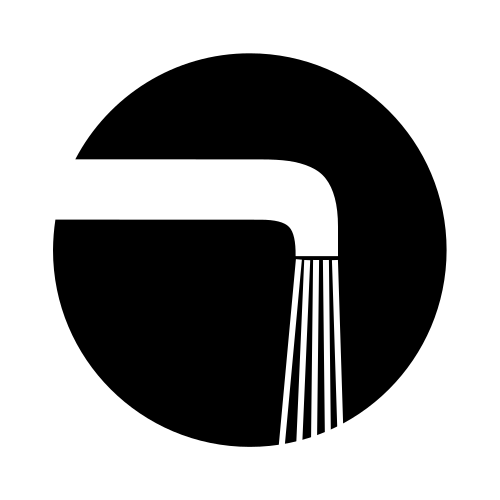

Datenschutzerklärung
Diese Datenschutzerklärung klärt Sie über die Art, den Umfang und
Zweck der Verarbeitung von personenbezogenen Daten (nachfolgend kurz
„Daten“) innerhalb unseres Onlineangebotes und der mit ihm
verbundenen Webseiten, Funktionen und Inhalte sowie externen
Onlinepräsenzen, wie z.B. unser Social Media Profile auf.
(nachfolgend gemeinsam bezeichnet als „Onlineangebot“). Im Hinblick
auf die verwendeten Begrifflichkeiten, wie z.B. „Verarbeitung“ oder
„Verantwortlicher“ verweisen wir auf die Definitionen im Art. 4 der
Datenschutzgrundverordnung (DSGVO).
Verantwortlicher
JOTT.MEDIA GmbH
Bahnhofstraße 33
31675 Bückeburg
E-Mail: hallo@jott.media
Geschäftsführer: Jan Jünemann, Jonathan Schneider
Impressum: https://jott.media/#impressum
Arten der verarbeiteten Daten:
- Bestandsdaten (z.B., Namen, Adressen).
- Kontaktdaten (z.B., E-Mail, Telefonnummern).
- Inhaltsdaten (z.B., Texteingaben, Fotografien, Videos).
- Nutzungsdaten (z.B., besuchte Webseiten, Interesse an Inhalten,
Zugriffszeiten).
- Meta-/Kommunikationsdaten (z.B., Geräte-Informationen,
IP-Adressen).
Zweck der Verarbeitung
- Zurverfügungstellung des Onlineangebotes, seiner Funktionen und
Inhalte.
- Beantwortung von Kontaktanfragen und Kommunikation mit Nutzern.
- Sicherheitsmaßnahmen.
- Reichweitenmessung/Marketing
Verwendete Begrifflichkeiten
„Personenbezogene Daten“ sind alle Informationen, die sich auf eine
identifizierte oder identifizierbare natürliche Person (im Folgenden
„betroffene Person“) beziehen; als identifizierbar wird eine
natürliche Person angesehen, die direkt oder indirekt, insbesondere
mittels Zuordnung zu einer Kennung wie einem Namen, zu einer
Kennnummer, zu Standortdaten, zu einer Online-Kennung (z.B. Cookie)
oder zu einem oder mehreren besonderen Merkmalen identifiziert
werden kann, die Ausdruck der physischen, physiologischen,
genetischen, psychischen, wirtschaftlichen, kulturellen oder
sozialen Identität dieser natürlichen Person sind.
„Verarbeitung“ ist jeder mit oder ohne Hilfe automatisierter
Verfahren ausgeführten Vorgang oder jede solche Vorgangsreihe im
Zusammenhang mit personenbezogenen Daten. Der Begriff reicht weit
und umfasst praktisch jeden Umgang mit Daten.
Als „Verantwortlicher“ wird die natürliche oder juristische Person,
Behörde, Einrichtung oder andere Stelle, die allein oder gemeinsam
mit anderen über die Zwecke und Mittel der Verarbeitung von
personenbezogenen Daten entscheidet, bezeichnet.
Maßgebliche Rechtsgrundlagen
Nach Maßgabe des Art. 13 DSGVO teilen wir Ihnen die Rechtsgrundlagen
unserer Datenverarbeitungen mit. Sofern die Rechtsgrundlage in der
Datenschutzerklärung nicht genannt wird, gilt Folgendes: Die
Rechtsgrundlage für die Einholung von Einwilligungen ist Art. 6 Abs.
1 lit. a und Art. 7 DSGVO, die Rechtsgrundlage für die Verarbeitung
zur Erfüllung unserer Leistungen und Durchführung vertraglicher
Maßnahmen sowie Beantwortung von Anfragen ist Art. 6 Abs. 1 lit. b
DSGVO, die Rechtsgrundlage für die Verarbeitung zur Erfüllung
unserer rechtlichen Verpflichtungen ist Art. 6 Abs. 1 lit. c DSGVO,
und die Rechtsgrundlage für die Verarbeitung zur Wahrung unserer
berechtigten Interessen ist Art. 6 Abs. 1 lit. f DSGVO. Für den
Fall, dass lebenswichtige Interessen der betroffenen Person oder
einer anderen natürlichen Person eine Verarbeitung personenbezogener
Daten erforderlich machen, dient Art. 6 Abs. 1 lit. d DSGVO als
Rechtsgrundlage.
Sicherheitsmaßnahmen
Wir bitten Sie sich regelmäßig über den Inhalt unserer
Datenschutzerklärung zu informieren. Wir passen die
Datenschutzerklärung an, sobald die Änderungen der von uns
durchgeführten Datenverarbeitungen dies erforderlich machen. Wir
informieren Sie, sobald durch die Änderungen eine
Mitwirkungshandlung Ihrerseits (z.B. Einwilligung) oder eine
sonstige individuelle Benachrichtigung erforderlich wird.
Zusammenarbeit mit Auftragsverarbeitern und Dritten
Sofern wir im Rahmen unserer Verarbeitung Daten gegenüber anderen
Personen und Unternehmen (Auftragsverarbeitern oder Dritten)
offenbaren, sie an diese übermitteln oder ihnen sonst Zugriff auf
die Daten gewähren, erfolgt dies nur auf Grundlage einer
gesetzlichen Erlaubnis (z.B. wenn eine Übermittlung der Daten an
Dritte, wie an Zahlungsdienstleister, gem. Art. 6 Abs. 1 lit. b
DSGVO zur Vertragserfüllung erforderlich ist), Sie eingewilligt
haben, eine rechtliche Verpflichtung dies vorsieht oder auf
Grundlage unserer berechtigten Interessen (z.B. beim Einsatz von
Beauftragten, Webhostern, etc.).
Sofern wir Dritte mit der Verarbeitung von Daten auf Grundlage eines
sog. „Auftragsverarbeitungsvertrages“ beauftragen, geschieht dies
auf Grundlage des Art. 28 DSGVO.
Übermittlungen in Drittländer
Sofern wir Daten in einem Drittland (d.h. außerhalb der Europäischen
Union (EU) oder des Europäischen Wirtschaftsraums (EWR)) verarbeiten
oder dies im Rahmen der Inanspruchnahme von Diensten Dritter oder
Offenlegung, bzw. Übermittlung von Daten an Dritte geschieht,
erfolgt dies nur, wenn es zur Erfüllung unserer (vor)vertraglichen
Pflichten, auf Grundlage Ihrer Einwilligung, aufgrund einer
rechtlichen Verpflichtung oder auf Grundlage unserer berechtigten
Interessen geschieht. Vorbehaltlich gesetzlicher oder vertraglicher
Erlaubnisse, verarbeiten oder lassen wir die Daten in einem
Drittland nur beim Vorliegen der besonderen Voraussetzungen der Art.
44 ff. DSGVO verarbeiten. D.h. die Verarbeitung erfolgt z.B. auf
Grundlage besonderer Garantien, wie der offiziell anerkannten
Feststellung eines der EU entsprechenden Datenschutzniveaus (z.B.
für die USA durch das „Privacy Shield“) oder Beachtung offiziell
anerkannter spezieller vertraglicher Verpflichtungen (so genannte
„Standardvertragsklauseln“).
Rechte der betroffenen Personen
Sie haben das Recht, eine Bestätigung darüber zu verlangen, ob
betreffende Daten verarbeitet werden und auf Auskunft über diese
Daten sowie auf weitere Informationen und Kopie der Daten
entsprechend Art. 15 DSGVO.
Sie haben entsprechend. Art. 16 DSGVO das Recht, die
Vervollständigung der Sie betreffenden Daten oder die Berichtigung
der Sie betreffenden unrichtigen Daten zu verlangen.
Sie haben nach Maßgabe des Art. 17 DSGVO das Recht zu verlangen,
dass betreffende Daten unverzüglich gelöscht werden, bzw. alternativ
nach Maßgabe des Art. 18 DSGVO eine Einschränkung der Verarbeitung
der Daten zu verlangen.
Sie haben das Recht zu verlangen, dass die Sie betreffenden Daten,
die Sie uns bereitgestellt haben nach Maßgabe des Art. 20 DSGVO zu
erhalten und deren Übermittlung an andere Verantwortliche zu
fordern.
Sie haben ferner gem. Art. 77 DSGVO das Recht, eine Beschwerde bei
der zuständigen Aufsichtsbehörde einzureichen.
Widerrufsrecht
Sie haben das Recht, erteilte Einwilligungen gem. Art. 7 Abs. 3
DSGVO mit Wirkung für die Zukunft zu widerrufen
Widerspruchsrecht
Sie können der künftigen Verarbeitung der Sie betreffenden Daten
nach Maßgabe des Art. 21 DSGVO jederzeit widersprechen. Der
Widerspruch kann insbesondere gegen die Verarbeitung für Zwecke der
Direktwerbung erfolgen.
Cookies und Widerspruchsrecht bei Direktwerbung
Als „Cookies“ werden kleine Dateien bezeichnet, die auf Rechnern der
Nutzer gespeichert werden. Innerhalb der Cookies können
unterschiedliche Angaben gespeichert werden. Ein Cookie dient primär
dazu, die Angaben zu einem Nutzer (bzw. dem Gerät auf dem das Cookie
gespeichert ist) während oder auch nach seinem Besuch innerhalb
eines Onlineangebotes zu speichern. Als temporäre Cookies, bzw.
„Session-Cookies“ oder „transiente Cookies“, werden Cookies
bezeichnet, die gelöscht werden, nachdem ein Nutzer ein
Onlineangebot verlässt und seinen Browser schließt. In einem solchen
Cookie kann z.B. der Inhalt eines Warenkorbs in einem Onlineshop
oder ein Login-Staus gespeichert werden. Als „permanent“ oder
„persistent“ werden Cookies bezeichnet, die auch nach dem Schließen
des Browsers gespeichert bleiben. So kann z.B. der Login-Status
gespeichert werden, wenn die Nutzer diese nach mehreren Tagen
aufsuchen. Ebenso können in einem solchen Cookie die Interessen der
Nutzer gespeichert werden, die für Reichweitenmessung oder
Marketingzwecke verwendet werden. Als „Third-Party-Cookie“ werden
Cookies bezeichnet, die von anderen Anbietern als dem
Verantwortlichen, der das Onlineangebot betreibt, angeboten werden
(andernfalls, wenn es nur dessen Cookies sind spricht man von
„First-Party Cookies“).
Wir können temporäre und permanente Cookies einsetzen und klären
hierüber im Rahmen unserer Datenschutzerklärung auf.
Falls die Nutzer nicht möchten, dass Cookies auf ihrem Rechner
gespeichert werden, werden sie gebeten die entsprechende Option in
den Systemeinstellungen ihres Browsers zu deaktivieren. Gespeicherte
Cookies können in den Systemeinstellungen des Browsers gelöscht
werden. Der Ausschluss von Cookies kann zu Funktionseinschränkungen
dieses Onlineangebotes führen.
Ein genereller Widerspruch gegen den Einsatz der zu Zwecken des
Onlinemarketing eingesetzten Cookies kann bei einer Vielzahl der
Dienste, vor allem im Fall des Trackings, über die US-amerikanische
Seite
http://www.aboutads.info/choices/
oder die EU-Seite
http://www.youronlinechoices.com/
erklärt werden. Des Weiteren kann die Speicherung von Cookies
mittels deren Abschaltung in den Einstellungen des Browsers erreicht
werden. Bitte beachten Sie, dass dann gegebenenfalls nicht alle
Funktionen dieses Onlineangebotes genutzt werden können.
Löschung von Daten
Die von uns verarbeiteten Daten werden nach Maßgabe der Art. 17 und
18 DSGVO gelöscht oder in ihrer Verarbeitung eingeschränkt. Sofern
nicht im Rahmen dieser Datenschutzerklärung ausdrücklich angegeben,
werden die bei uns gespeicherten Daten gelöscht, sobald sie für ihre
Zweckbestimmung nicht mehr erforderlich sind und der Löschung keine
gesetzlichen Aufbewahrungspflichten entgegenstehen. Sofern die Daten
nicht gelöscht werden, weil sie für andere und gesetzlich zulässige
Zwecke erforderlich sind, wird deren Verarbeitung eingeschränkt.
D.h. die Daten werden gesperrt und nicht für andere Zwecke
verarbeitet. Das gilt z.B. für Daten, die aus handels- oder
steuerrechtlichen Gründen aufbewahrt werden müssen.
Nach gesetzlichen Vorgaben in Deutschland, erfolgt die Aufbewahrung
insbesondere für 10 Jahre gemäß §§ 147 Abs. 1 AO, 257 Abs. 1 Nr. 1
und 4, Abs. 4 HGB (Bücher, Aufzeichnungen, Lageberichte,
Buchungsbelege, Handelsbücher, für Besteuerung relevanter
Unterlagen, etc.) und 6 Jahre gemäß § 257 Abs. 1 Nr. 2 und 3, Abs. 4
HGB (Handelsbriefe).
Nach gesetzlichen Vorgaben in Österreich erfolgt die Aufbewahrung
insbesondere für 7 J gemäß § 132 Abs. 1 BAO (Buchhaltungsunterlagen,
Belege/Rechnungen, Konten, Belege, Geschäftspapiere, Aufstellung der
Einnahmen und Ausgaben, etc.), für 22 Jahre im Zusammenhang mit
Grundstücken und für 10 Jahre bei Unterlagen im Zusammenhang mit
elektronisch erbrachten Leistungen, Telekommunikations-, Rundfunk-
und Fernsehleistungen, die an Nichtunternehmer in EU-Mitgliedstaaten
erbracht werden und für die der Mini-One-Stop-Shop (MOSS) in
Anspruch genommen wird.
Geschäftsbezogene Verarbeitung
Zusätzlich verarbeiten wir
- Vertragsdaten (z.B., Vertragsgegenstand, Laufzeit,
Kundenkategorie).
- Zahlungsdaten (z.B., Bankverbindung, Zahlungshistorie)
von unseren Kunden, Interessenten und Geschäftspartner zwecks
Erbringung vertraglicher Leistungen, Service und Kundenpflege,
Marketing, Werbung und Marktforschung.
Hosting
Die von uns in Anspruch genommenen Hosting-Leistungen dienen der
Zurverfügungstellung der folgenden Leistungen: Infrastruktur- und
Plattformdienstleistungen, Rechenkapazität, Speicherplatz und
Datenbankdienste, Sicherheitsleistungen sowie technische
Wartungsleistungen, die wir zum Zwecke des Betriebs dieses
Onlineangebotes einsetzen.
Hierbei verarbeiten wir, bzw. unser Hostinganbieter Bestandsdaten,
Kontaktdaten, Inhaltsdaten, Vertragsdaten, Nutzungsdaten, Meta-
und Kommunikationsdaten von Kunden, Interessenten und Besuchern
dieses Onlineangebotes auf Grundlage unserer berechtigten
Interessen an einer effizienten und sicheren Zurverfügungstellung
dieses Onlineangebotes gem. Art. 6 Abs. 1 lit. f DSGVO i.V.m. Art.
28 DSGVO (Abschluss Auftragsverarbeitungsvertrag).
Erhebung von Zugriffsdaten und Logfiles
Wir, bzw. unser Hostinganbieter, erhebt auf Grundlage unserer
berechtigten Interessen im Sinne des Art. 6 Abs. 1 lit. f. DSGVO
Daten über jeden Zugriff auf den Server, auf dem sich dieser
Dienst befindet (sogenannte Serverlogfiles). Zu den Zugriffsdaten
gehören Name der abgerufenen Webseite, Datei, Datum und Uhrzeit
des Abrufs, übertragene Datenmenge, Meldung über erfolgreichen
Abruf, Browsertyp nebst Version, das Betriebssystem des Nutzers,
Referrer URL (die zuvor besuchte Seite), IP-Adresse und der
anfragende Provider.
Logfile-Informationen werden aus Sicherheitsgründen (z.B. zur
Aufklärung von Missbrauchs- oder Betrugshandlungen) für die Dauer
von maximal 7 Tagen gespeichert und danach gelöscht. Daten, deren
weitere Aufbewahrung zu Beweiszwecken erforderlich ist, sind bis
zur endgültigen Klärung des jeweiligen Vorfalls von der Löschung
ausgenommen.
Agenturdienstleistungen
Wir verarbeiten die Daten unserer Kunden im Rahmen unserer
vertraglichen Leistungen zu denen konzeptionelle und strategische
Beratung, Kampagnenplanung, Software- und
Designentwicklung/-beratung oder Pflege, Umsetzung von Kampagnen
und Prozessen/ Handling, Serveradministration, Datenanalyse/
Beratungsleistungen und Schulungsleistungen gehören.
Hierbei verarbeiten wir Bestandsdaten (z.B., Kundenstammdaten, wie
Namen oder Adressen), Kontaktdaten (z.B., E-Mail, Telefonnummern),
Inhaltsdaten (z.B., Texteingaben, Fotografien, Videos),
Vertragsdaten (z.B., Vertragsgegenstand, Laufzeit), Zahlungsdaten
(z.B., Bankverbindung, Zahlungshistorie), Nutzungs- und Metadaten
(z.B. im Rahmen der Auswertung und Erfolgsmessung von
Marketingmaßnahmen). Besondere Kategorien personenbezogener Daten
verarbeiten wir grundsätzlich nicht, außer wenn diese Bestandteile
einer beauftragten Verarbeitung sind. Zu den Betroffenen gehören
unsere Kunden, Interessenten sowie deren Kunden, Nutzer,
Websitebesucher oder Mitarbeiter sowie Dritte. Der Zweck der
Verarbeitung besteht in der Erbringung von Vertragsleistungen,
Abrechnung und unserem Kundenservice. Die Rechtsgrundlagen der
Verarbeitung ergeben sich aus Art. 6 Abs. 1 lit. b DSGVO
(vertragliche Leistungen), Art. 6 Abs. 1 lit. f DSGVO (Analyse,
Statistik, Optimierung, Sicherheitsmaßnahmen). Wir verarbeiten
Daten, die zur Begründung und Erfüllung der vertraglichen
Leistungen erforderlich sind und weisen auf die Erforderlichkeit
ihrer Angabe hin. Eine Offenlegung an Externe erfolgt nur, wenn
sie im Rahmen eines Auftrags erforderlich ist. Bei der
Verarbeitung der uns im Rahmen eines Auftrags überlassenen Daten
handeln wir entsprechend den Weisungen der Auftraggeber sowie der
gesetzlichen Vorgaben einer Auftragsverarbeitung gem. Art. 28
DSGVO und verarbeiten die Daten zu keinen anderen, als den
auftragsgemäßen Zwecken.
Wir löschen die Daten nach Ablauf gesetzlicher Gewährleistungs-
und vergleichbarer Pflichten. die Erforderlichkeit der
Aufbewahrung der Daten wird alle drei Jahre überprüft; im Fall der
gesetzlichen Archivierungspflichten erfolgt die Löschung nach
deren Ablauf (6 J, gem. § 257 Abs. 1 HGB, 10 J, gem. § 147 Abs. 1
AO). Im Fall von Daten, die uns gegenüber im Rahmen eines Auftrags
durch den Auftraggeber offengelegt wurden, löschen wir die Daten
entsprechend den Vorgaben des Auftrags, grundsätzlich nach Ende
des Auftrags.
Erbringung vertraglicher Leistungen
Wir verarbeiten Bestandsdaten (z.B., Namen und Adressen sowie
Kontaktdaten von Nutzern), Vertragsdaten (z.B., in Anspruch
genommene Leistungen, Namen von Kontaktpersonen,
Zahlungsinformationen) zwecks Erfüllung unserer vertraglichen
Verpflichtungen und Serviceleistungen gem. Art. 6 Abs. 1 lit b.
DSGVO. Die in Onlineformularen als verpflichtend gekennzeichneten
Eingaben, sind für den Vertragsschluss erforderlich.
Im Rahmen der Inanspruchnahme unserer Onlinedienste, speichern wir
die IP-Adresse und den Zeitpunkt der jeweiligen Nutzerhandlung.
Die Speicherung erfolgt auf Grundlage unserer berechtigten
Interessen, als auch der Nutzer an Schutz vor Missbrauch und
sonstiger unbefugter Nutzung. Eine Weitergabe dieser Daten an
Dritte erfolgt grundsätzlich nicht, außer sie ist zur Verfolgung
unserer Ansprüche erforderlich oder es besteht hierzu eine
gesetzliche Verpflichtung gem. Art. 6 Abs. 1 lit. c DSGVO.
Wir verarbeiten Nutzungsdaten (z.B., die besuchten Webseiten
unseres Onlineangebotes, Interesse an unseren Produkten) und
Inhaltsdaten (z.B., Eingaben im Kontaktformular oder Nutzerprofil)
für Werbezwecke in einem Nutzerprofil, um den Nutzer z.B.
Produkthinweise ausgehend von ihren bisher in Anspruch genommenen
Leistungen einzublenden.
Die Löschung der Daten erfolgt nach Ablauf gesetzlicher
Gewährleistungs- und vergleichbarer Pflichten, die
Erforderlichkeit der Aufbewahrung der Daten wird alle drei Jahre
überprüft; im Fall der gesetzlichen Archivierungspflichten erfolgt
die Löschung nach deren Ablauf. Angaben im etwaigen Kundenkonto
verbleiben bis zu dessen Löschung.
Administration, Finanzbuchhaltung, Büroorganisation,
Kontaktverwaltung
Wir verarbeiten Daten im Rahmen von Verwaltungsaufgaben sowie
Organisation unseres Betriebs, Finanzbuchhaltung und Befolgung der
gesetzlichen Pflichten, wie z.B. der Archivierung. Hierbei
verarbeiten wir dieselben Daten, die wir im Rahmen der Erbringung
unserer vertraglichen Leistungen verarbeiten. Die
Verarbeitungsgrundlagen sind Art. 6 Abs. 1 lit. c. DSGVO, Art. 6
Abs. 1 lit. f. DSGVO. Von der Verarbeitung sind Kunden,
Interessenten, Geschäftspartner und Websitebesucher betroffen. Der
Zweck und unser Interesse an der Verarbeitung liegt in der
Administration, Finanzbuchhaltung, Büroorganisation, Archivierung
von Daten, also Aufgaben die der Aufrechterhaltung unserer
Geschäftstätigkeiten, Wahrnehmung unserer Aufgaben und Erbringung
unserer Leistungen dienen. Die Löschung der Daten im Hinblick auf
vertragliche Leistungen und die vertragliche Kommunikation
entspricht den, bei diesen Verarbeitungstätigkeiten genannten
Angaben.
Wir offenbaren oder übermitteln hierbei Daten an die
Finanzverwaltung, Berater, wie z.B., Steuerberater oder
Wirtschaftsprüfer sowie weitere Gebührenstellen und
Zahlungsdienstleister.
Ferner speichern wir auf Grundlage unserer
betriebswirtschaftlichen Interessen Angaben zu Lieferanten,
Veranstaltern und sonstigen Geschäftspartnern, z.B. zwecks
späterer Kontaktaufnahme. Diese mehrheitlich unternehmensbezogenen
Daten, speichern wir grundsätzlich dauerhaft.
Datenschutzhinweise im Bewerbungsverfahren
Wir verarbeiten die Bewerberdaten nur zum Zweck und im Rahmen des
Bewerbungsverfahrens im Einklang mit den gesetzlichen Vorgaben.
Die Verarbeitung der Bewerberdaten erfolgt zur Erfüllung unserer
(vor)vertraglichen Verpflichtungen im Rahmen des
Bewerbungsverfahrens im Sinne des Art. 6 Abs. 1 lit. b. DSGVO Art.
6 Abs. 1 lit. f. DSGVO sofern die Datenverarbeitung z.B. im Rahmen
von rechtlichen Verfahren für uns erforderlich wird (in
Deutschland gilt zusätzlich § 26 BDSG).
Das Bewerbungsverfahren setzt voraus, dass Bewerber uns die
Bewerberdaten mitteilen. Die notwendigen Bewerberdaten sind,
sofern wir ein Onlineformular anbieten gekennzeichnet, ergeben
sich sonst aus den Stellenbeschreibungen und grundsätzlich gehören
dazu die Angaben zur Person, Post- und Kontaktadressen und die zur
Bewerbung gehörenden Unterlagen, wie Anschreiben, Lebenslauf und
die Zeugnisse. Daneben können uns Bewerber freiwillig zusätzliche
Informationen mitteilen.
Mit der Übermittlung der Bewerbung an uns, erklären sich die
Bewerber mit der Verarbeitung ihrer Daten zu Zwecken des
Bewerbungsverfahrens entsprechend der in dieser
Datenschutzerklärung dargelegten Art und Umfang einverstanden.
Soweit im Rahmen des Bewerbungsverfahrens freiwillig besondere
Kategorien von personenbezogenen Daten im Sinne des Art. 9 Abs. 1
DSGVO mitgeteilt werden, erfolgt deren Verarbeitung zusätzlich
nach Art. 9 Abs. 2 lit. b DSGVO (z.B. Gesundheitsdaten, wie z.B.
Schwerbehinderteneigenschaft oder ethnische Herkunft). Soweit im
Rahmen des Bewerbungsverfahrens besondere Kategorien von
personenbezogenen Daten im Sinne des Art. 9 Abs. 1 DSGVO bei
Bewerbern angefragt werden, erfolgt deren Verarbeitung zusätzlich
nach Art. 9 Abs. 2 lit. a DSGVO (z.B. Gesundheitsdaten, wenn diese
für die Berufsausübung erforderlich sind).
Sofern zur Verfügung gestellt, können uns Bewerber ihre
Bewerbungen mittels eines Onlineformulars auf unserer Website
übermitteln. Die Daten werden entsprechend dem Stand der Technik
verschlüsselt an uns übertragen.
Ferner können Bewerber uns ihre Bewerbungen via E-Mail
übermitteln. Hierbei bitten wir jedoch zu beachten, dass E-Mails
grundsätzlich nicht verschlüsselt versendet werden und die
Bewerber selbst für die Verschlüsselung sorgen müssen. Wir können
daher für den Übertragungsweg der Bewerbung zwischen dem Absender
und dem Empfang auf unserem Server keine Verantwortung übernehmen
und empfehlen daher eher ein Online-Formular oder den postalischen
Versand zu nutzen. Denn statt der Bewerbung über das
Online-Formular und E-Mail, steht den Bewerbern weiterhin die
Möglichkeit zur Verfügung, uns die Bewerbung auf dem Postweg
zuzusenden.
Die von den Bewerbern zur Verfügung gestellten Daten, können im
Fall einer erfolgreichen Bewerbung für die Zwecke des
Beschäftigungsverhältnisses von uns weiterverarbeitet werden.
Andernfalls, sofern die Bewerbung auf ein Stellenangebot nicht
erfolgreich ist, werden die Daten der Bewerber gelöscht. Die Daten
der Bewerber werden ebenfalls gelöscht, wenn eine Bewerbung
zurückgezogen wird, wozu die Bewerber jederzeit berechtigt
sind.
Die Löschung erfolgt, vorbehaltlich eines berechtigten Widerrufs
der Bewerber, nach dem Ablauf eines Zeitraums von sechs Monaten,
damit wir etwaige Anschlussfragen zu der Bewerbung beantworten und
unseren Nachweispflichten aus dem Gleichbehandlungsgesetz genügen
können. Rechnungen über etwaige Reisekostenerstattung werden
entsprechend den steuerrechtlichen Vorgaben archiviert.
Kontaktaufnahme
Bei der Kontaktaufnahme mit uns (z.B. per Kontaktformular,
E-Mail, Telefon oder via sozialer Medien) werden die Angaben des
Nutzers zur Bearbeitung der Kontaktanfrage und deren Abwicklung
gem. Art. 6 Abs. 1 lit. b) DSGVO verarbeitet. Die Angaben der
Nutzer können in einem Customer-Relationship-Management System
("CRM System") oder vergleichbarer Anfragenorganisation
gespeichert werden.
Wir löschen die Anfragen, sofern diese nicht mehr erforderlich
sind. Wir überprüfen die Erforderlichkeit alle zwei Jahre; Ferner
gelten die gesetzlichen Archivierungspflichten.
Google Analytics
Wir setzen auf Grundlage unserer berechtigten Interessen (d.h.
Interesse an der Analyse, Optimierung und wirtschaftlichem Betrieb
unseres Onlineangebotes im Sinne des Art. 6 Abs. 1 lit. f. DSGVO)
Google Analytics, einen Webanalysedienst der Google LLC („Google“)
ein. Google verwendet Cookies. Die durch das Cookie erzeugten
Informationen über Benutzung des Onlineangebotes durch die Nutzer
werden in der Regel an einen Server von Google in den USA
übertragen und dort gespeichert.
Google ist unter dem Privacy-Shield-Abkommen zertifiziert und
bietet hierdurch eine Garantie, das europäische Datenschutzrecht
einzuhalten (https://www.privacyshield.gov/participant?id=a2zt000000001L5AAI&status=Active).
Google wird diese Informationen in unserem Auftrag benutzen, um
die Nutzung unseres Onlineangebotes durch die Nutzer auszuwerten,
um Reports über die Aktivitäten innerhalb dieses Onlineangebotes
zusammenzustellen und um weitere, mit der Nutzung dieses
Onlineangebotes und der Internetnutzung verbundene
Dienstleistungen, uns gegenüber zu erbringen. Dabei können aus den
verarbeiteten Daten pseudonyme Nutzungsprofile der Nutzer erstellt
werden.
Wir setzen Google Analytics nur mit aktivierter IP-Anonymisierung
ein. Das bedeutet, die IP-Adresse der Nutzer wird von Google
innerhalb von Mitgliedstaaten der Europäischen Union oder in
anderen Vertragsstaaten des Abkommens über den Europäischen
Wirtschaftsraum gekürzt. Nur in Ausnahmefällen wird die volle
IP-Adresse an einen Server von Google in den USA übertragen und
dort gekürzt.
Die von dem Browser des Nutzers übermittelte IP-Adresse wird nicht
mit anderen Daten von Google zusammengeführt. Die Nutzer können
die Speicherung der Cookies durch eine entsprechende Einstellung
ihrer Browser-Software verhindern; die Nutzer können darüber
hinaus die Erfassung der durch das Cookie erzeugten und auf ihre
Nutzung des Onlineangebotes bezogenen Daten an Google sowie die
Verarbeitung dieser Daten durch Google verhindern, indem sie das
unter folgendem Link verfügbare Browser-Plugin herunterladen und
installieren: http://tools.google.com/dlpage/gaoptout?hl=de.
Weitere Informationen zur Datennutzung durch Google, Einstellungs-
und Widerspruchsmöglichkeiten, erfahren Sie in der
Datenschutzerklärung von Google (https://policies.google.com/technologies/ads)
sowie in den Einstellungen für die Darstellung von
Werbeeinblendungen durch Google
(https://adssettings.google.com/authenticated).
Die personenbezogenen Daten der Nutzer werden nach 14 Monaten
gelöscht oder anonymisert.
Onlinepräsenzen in sozialen Medien
Wir unterhalten Onlinepräsenzen innerhalb sozialer Netzwerke und
Plattformen, um mit den dort aktiven Kunden, Interessenten und
Nutzern kommunizieren und sie dort über unsere Leistungen
informieren zu können. Beim Aufruf der jeweiligen Netzwerke und
Plattformen gelten die Geschäftsbedingungen und die
Datenverarbeitungsrichtlinien deren jeweiligen Betreiber.
Soweit nicht anders im Rahmen unserer Datenschutzerklärung
angegeben, verarbeiten wir die Daten der Nutzer sofern diese mit
uns innerhalb der sozialen Netzwerke und Plattformen
kommunizieren, z.B. Beiträge auf unseren Onlinepräsenzen verfassen
oder uns Nachrichten zusenden.
Einbindung von Diensten und Inhalten Dritter
Wir setzen innerhalb unseres Onlineangebotes auf Grundlage
unserer berechtigten Interessen (d.h. Interesse an der Analyse,
Optimierung und wirtschaftlichem Betrieb unseres Onlineangebotes
im Sinne des Art. 6 Abs. 1 lit. f. DSGVO) Inhalts- oder
Serviceangebote von Drittanbietern ein, um deren Inhalte und
Services, wie z.B. Videos oder Schriftarten einzubinden
(nachfolgend einheitlich bezeichnet als “Inhalte”).
Dies setzt immer voraus, dass die Drittanbieter dieser Inhalte,
die IP-Adresse der Nutzer wahrnehmen, da sie ohne die IP-Adresse
die Inhalte nicht an deren Browser senden könnten. Die IP-Adresse
ist damit für die Darstellung dieser Inhalte erforderlich. Wir
bemühen uns nur solche Inhalte zu verwenden, deren jeweilige
Anbieter die IP-Adresse lediglich zur Auslieferung der Inhalte
verwenden. Drittanbieter können ferner so genannte Pixel-Tags
(unsichtbare Grafiken, auch als "Web Beacons" bezeichnet) für
statistische oder Marketingzwecke verwenden. Durch die
"Pixel-Tags" können Informationen, wie der Besucherverkehr auf den
Seiten dieser Website ausgewertet werden. Die pseudonymen
Informationen können ferner in Cookies auf dem Gerät der Nutzer
gespeichert werden und unter anderem technische Informationen zum
Browser und Betriebssystem, verweisende Webseiten, Besuchszeit
sowie weitere Angaben zur Nutzung unseres Onlineangebotes
enthalten, als auch mit solchen Informationen aus anderen Quellen
verbunden werden.
Vimeo
Wir können die Videos der Plattform “Vimeo” des Anbieters Vimeo
Inc., Attention: Legal Department, 555 West 18th Street New York,
New York 10011, USA, einbinden. Datenschutzerklärung:
https://vimeo.com/privacy. WIr weisen darauf hin,
dass Vimeo Google Analytics einsetzen
kann und verweisen hierzu auf die Datenschutzerklärung (https://www.google.com/policies/privacy) sowie
Opt-Out-Möglichkeiten für Google-Analytics (http://tools.google.com/dlpage/gaoptout?hl=de)
oder die Einstellungen von Google für die Datennutzung zu
Marketingzwecken (https://adssettings.google.com/.).
Youtube
Wir binden die Videos der Plattform “YouTube” des Anbieters
Google LLC, 1600 Amphitheatre Parkway, Mountain View, CA 94043,
USA, ein. Datenschutzerklärung:
https://www.google.com/policies/privacy/, Opt-Out:
https://adssettings.google.com/authenticated.
Google Fonts
Wir binden die Schriftarten ("Google Fonts") des Anbieters Google
LLC, 1600 Amphitheatre Parkway, Mountain View, CA 94043, USA, ein.
Datenschutzerklärung:
https://www.google.com/policies/privacy/, Opt-Out:
https://adssettings.google.com/authenticated.
Google Maps
Wir binden die Landkarten des Dienstes “Google Maps” des
Anbieters Google LLC, 1600 Amphitheatre Parkway, Mountain View, CA
94043, USA, ein. Zu den verarbeiteten Daten können insbesondere
IP-Adressen und Standortdaten der Nutzer gehören, die jedoch nicht
ohne deren Einwilligung (im Regelfall im Rahmen der Einstellungen
ihrer Mobilgeräte vollzogen), erhoben werden. Die Daten können in
den USA verarbeitet werden. Datenschutzerklärung:
https://www.google.com/policies/privacy/, Opt-Out:
https://adssettings.google.com/authenticated.
Erstellt mit
Datenschutz-Generator.de von RA Dr. Thomas Schwenke
 


